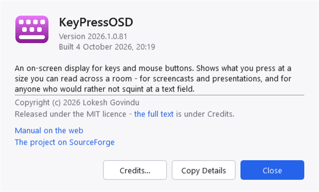
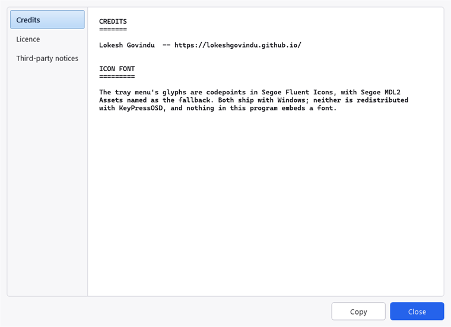

About KeyPressOSD
KeyPressOSD shows what you press, on screen, at a size somebody can read from across a room. In keystrokes mode it names each key as you press it — Ctrl + Shift + P, Alt + Tab x3, F5. In typing mode it shows the words instead, as one line that never wraps.
It is one executable. Nothing is installed, no service is registered, and nothing starts unless you start it — see Privacy for the full account of what it does and does not do.
What it needs
| Windows | Windows 10 or 11, 64-bit. |
| Runtime | None. The published build is self-contained and a single file, so no .NET runtime has to be installed. |
| Installation | None. Unpack the ZIP and run KeyPressOSD.exe. |
| Settings | One JSON file, KeyPressOSD.json, beside the executable if that folder is writable and in %APPDATA%\KeyPressOSD otherwise. Nothing is written to the registry except the optional Run at Startup value. |
Being portable is the reason there is no installer: an installer would add a step and take away the property that makes the application easy to try and easy to remove. See Known limitations.
Which build you are running
About KeyPressOSD in the tray menu.

The About dialogue. The version, when it was built, and the licence named rather than hidden one click away — "may I use this at work" is a question an About box is opened to answer.
The version reads 2026.1.0.<build>, and the last number is the count of commits the build was made from, so every build has a version of its own and no two share one.
A line reading Running as administrator appears above the description when it applies, and only then. It is worth stating because elevation changes what the application can see, and because the tray menu — the only other place that says so — is not somewhere you can point at in a report. See Known limitations.
Copy Details puts five lines on the clipboard:
KeyPressOSD 2026.1.0.80
Built 2026-10-04 15:52
Windows Microsoft Windows NT 10.0.26200.0
Runtime .NET 10.0.0
Process 64-bitThat is deliberately short and deliberately dull. It carries the version, the build, the operating system and the runtime, and nothing about what is on screen, nothing from the settings, and nothing that could contain a keystroke — this application does not put those in a file and does not put them on the clipboard either.
Updates
Check for Updates in the tray menu asks for a small version file over HTTPS, says whether a newer release exists, and offers to open the download page. It uploads nothing about you, and nothing checks at start-up or on a timer — see Privacy.
It does not download or install anything. Replacing a running executable needs elevation for an installed copy and a signature to be worth trusting, and this application has neither.
Licence
MIT. Use it, change it, ship it inside something else; keep the copyright notice. The full text is LICENSE.txt in the release archive, and About → Credits shows it without needing a text editor.

Credits, Licence and Third-party notices, each reading the file that ships beside the executable rather than a copy pasted into the application.
The application references no NuGet packages at all: everything is written against .NET and the Windows API directly, so there is nothing else whose terms you have to read. THIRD-PARTY-NOTICES.txt records that, and names the one thing worth naming — the tray menu's glyphs are codepoints in fonts that ship with Windows, referenced by name and not embedded.
The source is not available at present. The repository is private, so there is nothing to clone; the licence is unchanged and still ships beside the executable.
Who wrote it
Lokesh Govindu — lokeshgovindu.github.io.
Where things are
| Home | keypressosd.sourceforge.io — this documentation, generated from the same files as the CHM. |
| Project | The project on SourceForge — the description, screenshots and reviews. |
| Downloads | All files and checksums — every release. |
| Problems | Tickets — see Contact for what to put in one. |
Current releases are pre-releases. They work and are in daily use, but on one machine and one keyboard layout — so a report about different hardware, more than two monitors, mixed DPI or another keyboard layout is the most useful thing you can send.